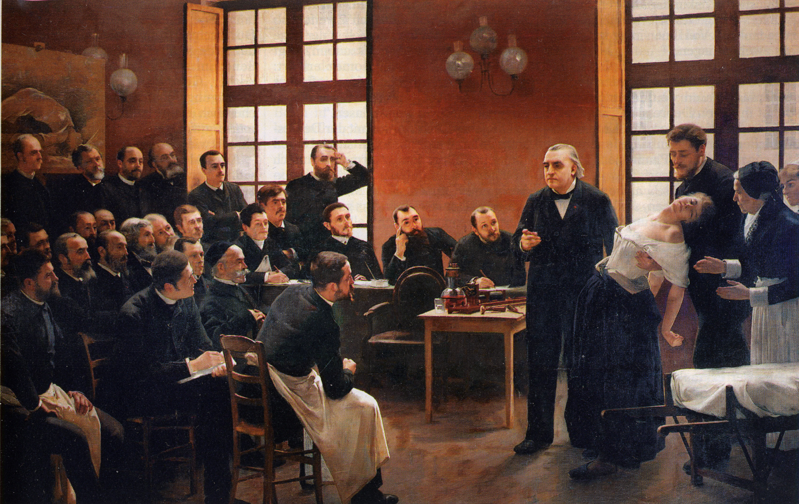

People have been entering into hypnotic-type trances for thousands of years. In many cultures and religions, it was regarded as a form of meditation. Modern day hypnosis, however, started in the late 18th century and was made popular by Franz Mesmer, a German physician who became known as the father of ‘modern hypnotism’. In fact, hypnosis used to be known as ‘Mesmerism’ as it was named after Mesmer.
Precursors
People have been entering into hypnotic-type trances for thousands of years. In many cultures and religions, it was regarded as a form of meditation. Modern day hypnosis, however, started in the late 18th century and was made popular by Franz Mesmer, a German physician who became known as the father of ‘modern hypnotism’. In fact, hypnosis used to be known as ‘Mesmerism’ as it was named after Mesmer. Mesmer held the opinion that hypnosis was a sort of mystical force that flows from the hypnotist to the person being hypnotized, but his theory was dismissed by critics who asserted that there is no magical element to hypnotism. Before long, hypnotism started finding its way into the world of modern medicine. The use of hypnotism in the medical field was made popular by surgeons and physicians like Elliotson and James Esdaille and researchers like James Braid who helped to reveal the biological and physical benefits of hypnotism.[50] According to his writings, Braid began to hear reports concerning various Oriental meditative practices soon after the release of his first publication on hypnotism, Neurypnology (1843). He first discussed some of these oriental practices in a series of articles entitled Magic, Mesmerism, Hypnotism, etc., Historically & Physiologically Considered. He drew analogies between his own practice of hypnotism and various forms of Hindu yoga meditation and other ancient spiritual practices, especially those involving voluntary burial and apparent human hibernation. Braid's interest in these practices stems from his studies of the Dabistān-i Mazāhib, the "School of Religions", an ancient Persian text describing a wide variety of Oriental religious rituals, beliefs, and practices.
Although he rejected the transcendental/metaphysical interpretation given to these phenomena outright, Braid accepted that these accounts of Oriental practices supported his view that the effects of hypnotism could be produced in solitude, without the presence of any other person (as he had already proved to his own satisfaction with the experiments he had conducted in November 1841); and he saw correlations between many of the "metaphysical" Oriental practices and his own "rational" neuro-hypnotism, and totally rejected all of the fluid theories and magnetic practices of the mesmerists.
Franz Mesmer
Franz Mesmer (1734–1815) believed that there is a magnetic force or "fluid" called "animal magnetism" within the universe that influences the health of the human body. He experimented with magnets to impact this field in order to produce healing. By around 1774, he had concluded that the same effect could be created by passing the hands in front of the subject's body, later referred to as making "Mesmeric passes". The word "mesmerize", formed from the last name of Franz Mesmer, was intentionally used to separate practitioners of mesmerism from the various "fluid" and "magnetic" theories included within the label "magnetism".
In 1784, at the request of King Louis XVI, a Board of Inquiry started to investigate whether animal magnetism existed. Among the board members were founding father of modern chemistry Antoine Lavoisier, Benjamin Franklin, and an expert in pain control, Joseph-Ignace Guillotin. They investigated the practices of a disaffected student of Mesmer, one Charles d'Eslon (1750–1786), and though they concluded that Mesmer's results were valid, their placebo-controlled experiments using d'Eslon's methods convinced them that mesmerism was most likely due to belief and imagination rather than to an invisible energy ("animal magnetism") transmitted from the body of the mesmerist.
In writing the majority opinion, Franklin said: "This fellow Mesmer is not flowing anything from his hands that I can see. Therefore, this mesmerism must be a fraud." Mesmer left Paris and went back to Vienna to practise mesmerism.
James Braid
Following the French committee's findings, Dugald Stewart, an influential academic philosopher of the "Scottish School of Common Sense", encouraged physicians in his Elements of the Philosophy of the Human Mind (1818)[54] to salvage elements of Mesmerism by replacing the supernatural theory of "animal magnetism" with a new interpretation based upon "common sense" laws of physiology and psychology.
In his later works, Braid reserved the term "hypnotism" for cases in which subjects entered a state of amnesia resembling sleep. For other cases, he spoke of a "mono-ideodynamic" principle to emphasise that the eye-fixation induction technique worked by narrowing the subject's attention to a single idea or train of thought ("monoideism"), which amplified the effect of the consequent "dominant idea" upon the subject's body by means of the ideo-dynamic principle.
Hysteria vs. suggestion
For several decades Braid's work became more influential abroad than in his own country, except for a handful of followers, most notably Dr. John Milne Bramwell. The eminent neurologist Dr. George Miller Beard took Braid's theories to America. Meanwhile, his works were translated into German by William Thierry Preyer, Professor of Physiology at Jena University. The psychiatrist Albert Moll subsequently continued German research, publishing Hypnotism in 1889. France became the focal point for the study of Braid's ideas after the eminent neurologist Dr. Étienne Eugène Azam translated Braid's last manuscript (On Hypnotism, 1860) into French and presented Braid's research to the French Academy of Sciences. At the request of Azam, Paul Broca, and others, the French Academy of Science, which had investigated Mesmerism in 1784, examined Braid's writings shortly after his death.[58]
Azam's enthusiasm for hypnotism influenced Ambroise-Auguste Liébeault, a country doctor. Hippolyte Bernheim discovered Liébeault's enormously popular group hypnotherapy clinic and subsequently became an influential hypnotist. The study of hypnotism subsequently revolved around the fierce debate between Bernheim and Jean-Martin Charcot, the two most influential figures in late 19th-century hypnotism.
Charcot operated a clinic at the Pitié-Salpêtrière Hospital (thus, known as the "Paris School" or the "Salpêtrière School"), while Bernheim had a clinic in Nancy (known as the "Nancy School"). Charcot, who was influenced more by the Mesmerists, argued that hypnotism was an abnormal state of nervous functioning found only in certain hysterical women. He claimed that it manifested in a series of physical reactions that could be divided into distinct stages. Bernheim argued that anyone could be hypnotised, that it was an extension of normal psychological functioning, and that its effects were due to suggestion. After decades of debate, Bernheim's view dominated. Charcot's theory is now just a historical curiosity.
Sigmund Freud
Sigmund Freud (1856–1939), the founder of psychoanalysis, studied hypnotism at the Paris School and briefly visited the Nancy School.
At first, Freud was an enthusiastic proponent of hypnotherapy. He "initially hypnotised patients and pressed on their foreheads to help them concentrate while attempting to recover (supposedly) repressed memories",[61] and he soon began to emphasise hypnotic regression and ab reaction (catharsis) as therapeutic methods. He wrote a favorable encyclopedia article on hypnotism, translated one of Bernheim's works into German, and published an influential series of case studies with his colleague Joseph Breuer entitled Studies on Hysteria (1895). This became the founding text of the subsequent tradition known as "hypno-analysis" or "regression hypnotherapy".
However, Freud gradually abandoned hypnotism in favour of psychoanalysis, emphasizing free association and interpretation of the unconscious. Struggling with the great expense of time that psychoanalysis required, Freud later suggested that it might be combined with hypnotic suggestion to hasten the outcome of treatment, but that this would probably weaken the outcome: "It is very probable, too, that the application of our therapy to numbers will compel us to alloy the pure gold of analysis plentifully with the copper of direct [hypnotic] suggestion."